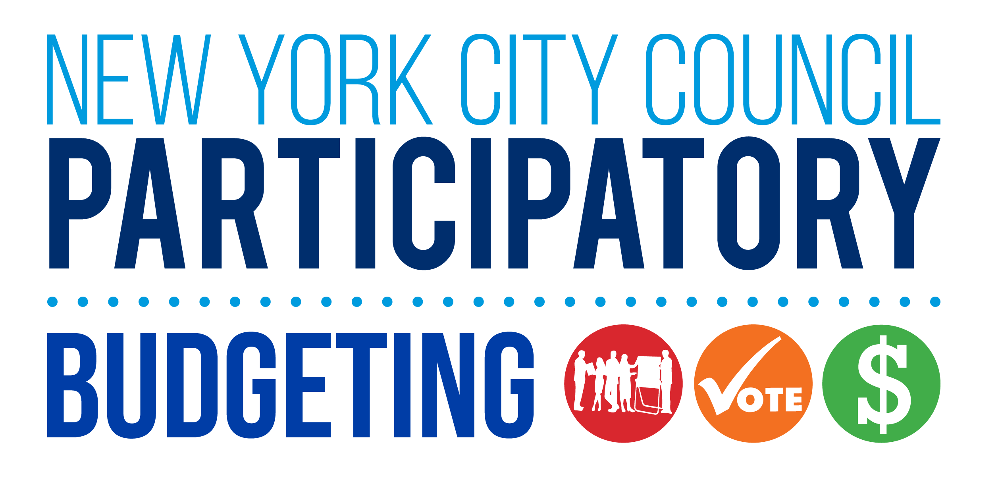

NYC Participates!
Visualization of PBNYC Projects in each city council districts!
Please select a year:
All Years
2012
2013
2014
2015
2016
2017
Please select a category:
All Categories
Education
Arts, Culture & Community
Parks & Recreation
Transit
Housing
Public Safety
Streets
Environment
Youth
Others
Please click on a district for more information after selecting year to visualize.
